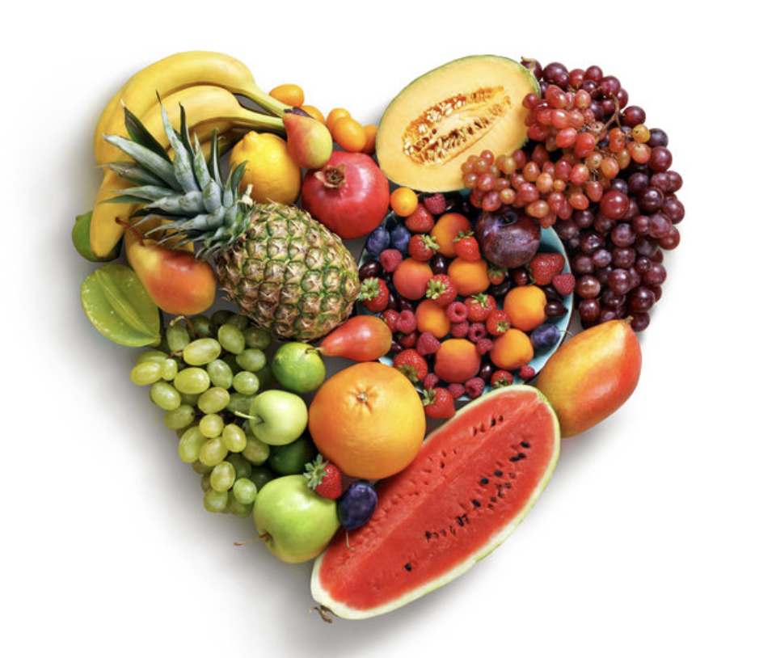
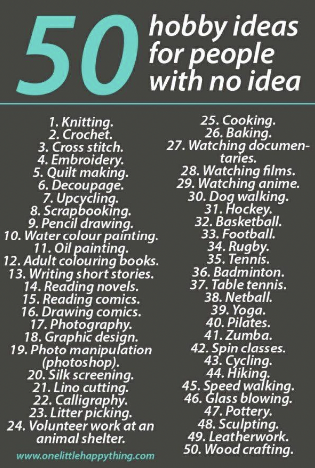
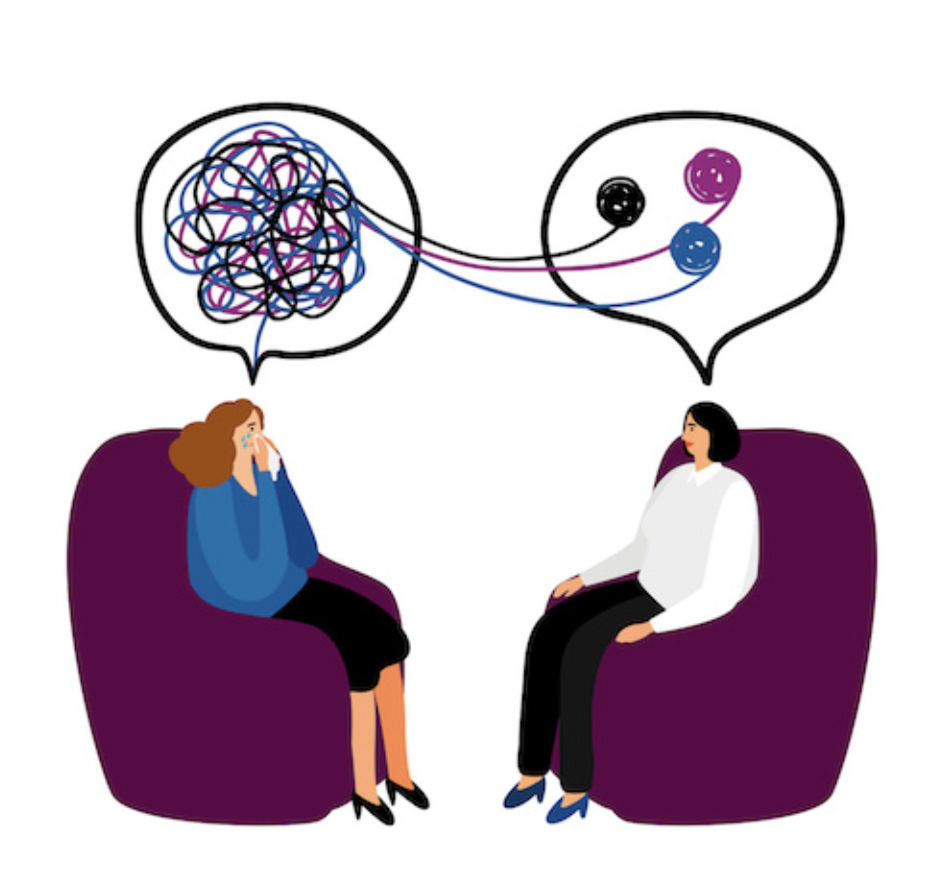

Five methods you can practice or imrpove on to help your mental health get better
Scroll Away!This is a healthy outlet to get ride of stress or any negative emotions. Being active helps your mind think about something else rather than dwelling on what you are stressing about. Your body also releass endorphins which triggers positive feelings. Some ways to exercise include:
Having a balanced and healthy diet is helpful for keeping a good mental state. You can start off by not eating that much fast food. There are so many preservatives are put in food which is unhealthy and can make you feel tired and sluggish. Another way to focus on a good diet is to cook your own meals. Cooking can fun in cooking and also helps you find delicious meals that gives your body the fuel it needs
Here is a website that gives recipes to 90 healthy dishes that take only 30 minutes to cook:
Healthy Recipes Having a hobbhy can help someone find a purpose and give them something to do with free time. Artistic hobbies are a good way to be creative and express any emotions you have through painting or writing. Another good hobby that fuels your brain is reading. It is a good way to relax and think about something else.
Often times people when poeple struggle woth their mental health it is because they do not feel like they have a purpose or that life is meaningless. A few practices that would help with this is meditating or doing yoga. This helps someone practice mindfulness and sort out their thoughts and emotions. Also looking into religion can be beneficial by finding a purpose or having faith in something.
Healing is not easy but it is worth it. You can heal by going to therapy to get advice from someone and the comfort of talking about your problems with out being judged. Another way to heal is by journaling and getting your thoughts on paper. Sometimes reading what you have been dealing with can help you find a solution.
Here is a website that shows some yoga poses:
Yoga Poses 